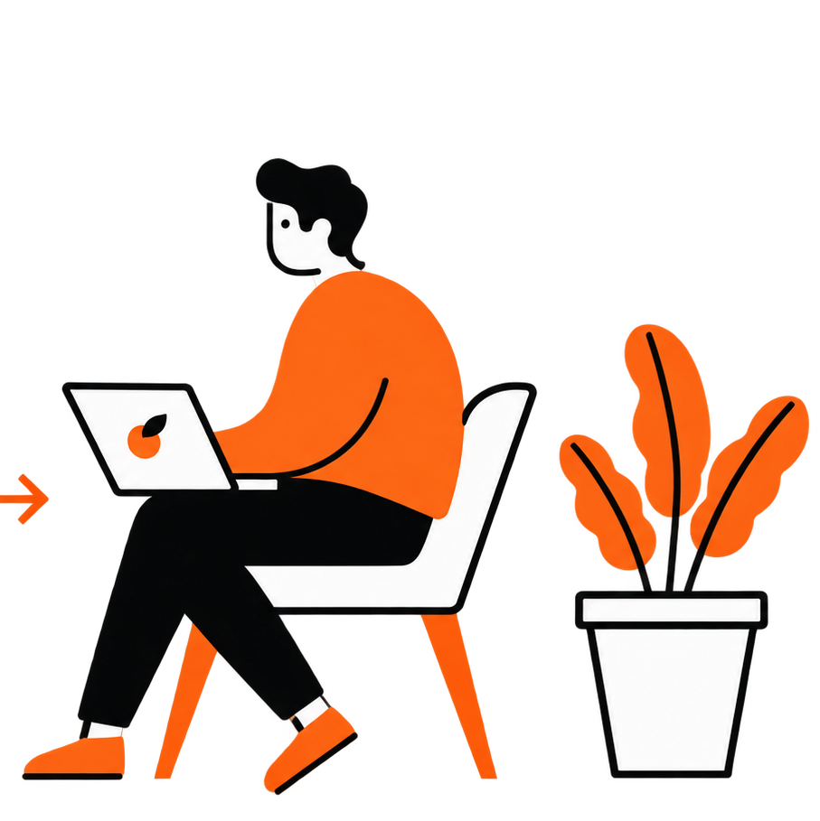
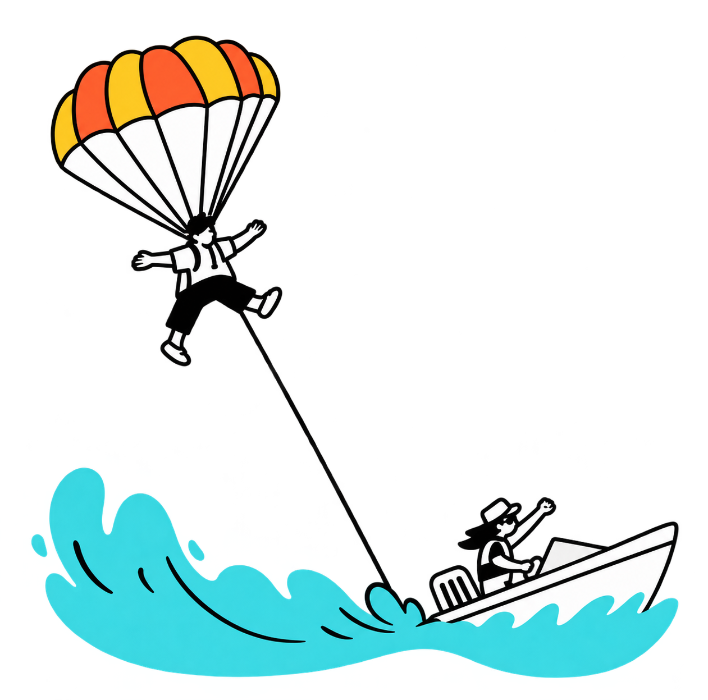
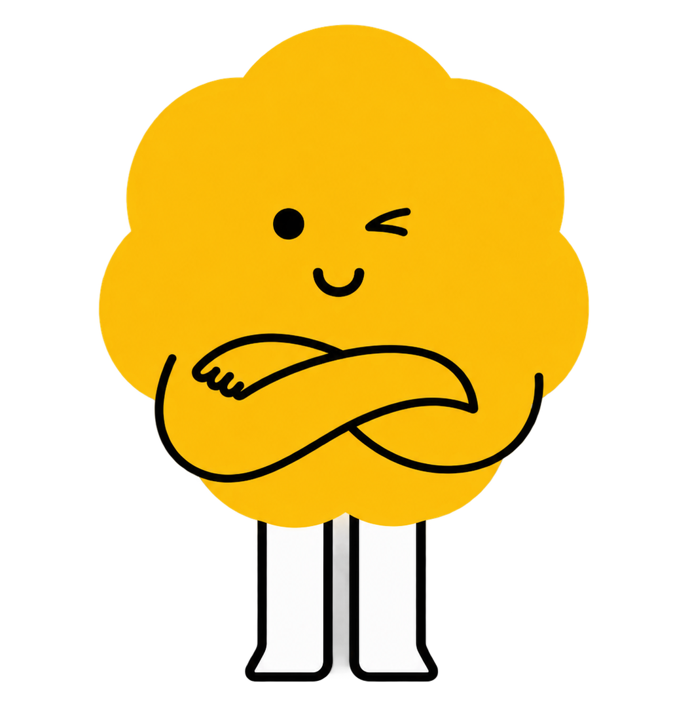

Tecnologia que acolhe, no tempo deles.
O UTOME é mais que um robô, é um companheiro desenvolvido para oferecer interações previsíveis, conforto e apoio em rotinas para crianças com TEA, sem sobrecarga sensorial.

Crianças com TEA merecem tecnologia feita para elas.
Muitas soluções tecnológicas são complexas, barulhentas e cheias de estímulos. O oposto do que crianças autistas precisam.

Sobrecarga Sensorial
Excesso de sons, luzes e estímulos que dificultam a concentração e o bem-estar.

Mudanças de Rotina
Imprevisibilidade gera ansiedade. Crianças com TEA precisam de consistência e previsão.

Ansiedade e Isolamento
A dificuldade em se comunicar emocionalmente pode gerar afastamento e angústia.

Falta de Acesso
Soluções assistivas no mercado costumam ser caras e inacessíveis para muitas famílias.

Um companheiro, não uma substituição.
O UTOME foi projetado para atuar como um apoio leve e positivo, nunca para substituir familiares, terapeutas ou profissionais de saúde.
-
 Prioriza simplicidade e previsibilidade
Prioriza simplicidade e previsibilidade
-
Funciona sem internet para as funções essenciais
-
Design de baixo estímulo sensorial
-
Conectado à plataforma do responsável
Simples do início ao fim.
Uma interação intuitiva que respeita o ritmo de cada criança. O site é o centro de controle do responsável.
Interação com o UTOME

Modo Companhia
Estado padrão: o UTOME exibe animações calmas e responde livremente ao toque.


Rotina enviada
O responsável cria uma tarefa no site e o UTOME exibe o lembrete no OLED.

3 toques = feito!
A criança toca 3 vezes no sensor para confirmar que completou a tarefa.

Celebração!
O UTOME exibe uma animação de conquista e mensagem positiva no OLED.
Modo Companhia
O ciclo recomeça: o robô volta ao estado de companhia, calmo e disponível.
Plataforma do Responsável

Responsável entra
Acessa a plataforma UTOME com sua conta e visualiza os dispositivos vinculados.
Cria uma rotina
Adiciona uma tarefa para a criança fazer: beber água, escovar os dentes, estudar e muito mais.

UTOME recebe
A tarefa é enviada para o dispositivo, que exibe o lembrete na tela OLED.

Responsável acompanha
O painel atualiza em tempo real mostrando o status de cada rotina concluída ou pendente.
O UTOME sempre está lá, no ritmo dela.
O robô alterna entre dois estados simples e previsíveis, criando uma rotina que a criança pode entender e antecipar.

Modo Companhia
O UTOME exibe expressões amigáveis e responde livremente ao toque da criança. Nenhuma exigência, apenas presença.
-
 Animações calmas no OLED
Animações calmas no OLED
-
Resposta livre ao toque
-
Sem estímulos excessivos
 Responsável cria tarefa
Responsável cria tarefa

Lembrete Ativo
O OLED exibe a tarefa definida pelo responsável. O modo companhia fica pausado até a criança completar o desafio.
-
 Tarefa exibida na tela
Tarefa exibida na tela
-
Modo companhia pausado
-
Aguarda confirmação
Criança toca 3x

Celebração
Com 3 toques simples no sensor, a criança confirma a tarefa. O UTOME celebra e volta ao Modo Companhia automaticamente.
-
Animacao de conquista
-
Painel atualiza em tempo real
-
Modo companhia restaurado

O ciclo é sempre previsível e repetível. A criança aprende rapidamente o que esperar, o que reduz a ansiedade e cria um sentimento de conquista a cada tarefa cumprida.
Por que escolher o UTOME?

Baixo Estímulo
Interações calmas e tela OLED minimalista, pensadas para evitar a sobrecarga sensorial.

Apoio em Rotinas
Hidratação, estudos, escovação, sono. O UTOME apoia cada etapa do dia com gentileza.

Feedback Positivo
Mensagens de incentivo e expressões que celebram cada pequena conquista da criança.

Modo Offline
O UTOME funciona sem internet para as funções básicas, previsível em qualquer lugar.

Modo Calmante
Reduz estímulos, usa animações suaves e linguagem curta para momentos de tensão.

Plataforma do Responsável
Responsáveis acompanham rotinas, status do dispositivo e configuram tudo pelo site.
Da ideia ao UTOME Gen 1.
Um processo rigoroso de pesquisa, STEM e prototipagem.
Pesquisa
Estudo sobre TEA, estimulos sensoriais e solucoes tecnologicas existentes.
Definicao do Problema
Identificacao da lacuna: criancas autistas precisam de tecnologia calma e previsivel.
Conceito e Componentes
ESP32-C3, OLED 128x64, sensores TTP223, bateria 18650 e modulo TP4056.
Circuito e Programacao
Montagem do hardware e desenvolvimento do firmware com os estados de interacao.
Testes e Melhorias
Validacao pratica, ajustes de sensibilidade, autonomia de bateria e experiencia de uso.
UTOME Gen 1
O primeiro companheiro robotico acolhedor, pronto para apoiar criancas com TEA.
Veja o UTOME em ação.
Uma simulação simples de como o robô responde ao toque.
Pronto para conectar seu UTOME?
Cadastre-se e vincule seu dispositivo à plataforma do responsável para acompanhar rotinas e receber atualizações em tempo real.